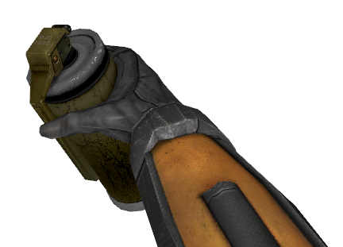

This sounds like a good idea.
Also it would be great to give hands and animation to carrying physics object, instead of it floating in mid air.
That gets me thinking if feet models could be implemented as well as crysis. What do you guys think?

This sounds like a good idea.
Also it would be great to give hands and animation to carrying physics object, instead of it floating in mid air.
That gets me thinking if feet models could be implemented as well as crysis. What do you guys think?
If I recall they said no on feet.
I think if it could be made easy i.e two or three versions of a view model for prop pickups like HL2 grenade hand / two handed and perhaps another can be done then yes. especially for throwning headcrabs about.
Hard to verbalise but default hand animations that fit various prop types.
I would also like to see bashing doors / vents open animation
Could Kleiner’s labcoat match the other scientists? It just really bugs me how his is way shorter than all the others
Leeches. Perhaps they could be toggled on and off from the options menu (perhaps disabled by default), but I want those little fuckers back in the pools of water. They help to make the water sections feel a bit more dangerous and untrustworthy, which makes it more real in my mind. Gives the player a sense of trepidation before entering water elements. Add to the fact that they also exist in HL2 so they should be in this.
Bring back the leeches!
Talking about weapons again.
Could we get the satchel with the yellow explosive tag, that has the jigglebones
I would like to see an idle animation on the crowbar (suggestion patting the crowbar into an empty left hand)
the glock in the style of the HD pack I think would be better or choice.
Choice of stock no stock on shotgun also.
Leeches were dumped for several reasons…the biggest one and a pet pev of mine was taking damage from something that was hard to see. In APP we tested with them and it was really hard to swim anywhere in the silo without dying. We removed another area that was similar in QE after the laser fired thought the wall and it was hot. We originally had you take damage from that. We scrapped both because you were punishing the player for taking a path we forced them to take which wasn’t fair.
I’ve mentioned this before, but while you’re here I’ll say it again 
I think a lot of people would like to see the leeches included as “friendly NPCs”. That way it would still be in the game, but it wouldn’t have any effect on gameplay.
As for the leeches, I understand why they were removed and that’s why I suggested having them disabled by default (or at least not having the leeches damage you as per bur’s suggestion), but perhaps you could set it so that the leeches don’t bite you as much if they’re taking off TOO much health (maybe the leeches could only take off 1HP of damage per bite or can only take you down to 10-25HP or something).
I fully endorse, however, punishing the player for taking a path you force them to take. :retard: This actually isn’t because I want the game to be sadistic but because it adds a facet of realism to the game. The way you have to go is fraught with danger…even from something as small as leeches.
Just my opinion.
Oh, also, if you could turn down the bloom on certain objects (don’t know if you can or not). I don’t think that whiteboards and the scientists’ labcoats are supposed to glow. I’m almost sure of that.
From watching few let’s play vids, it seemed that people expected the red-hot surface to damage them and they got temporarily confused as to where to go.
I think making the glow fade, along with the damage it does, would give the player an indication when it was safe to go through?
Yeah Leeches doesn’t have to be so devastating. I think they should bite for 1 damage and then flee, and then strike again… just like in HL1.
Then those are stupid. Why would they cater to such players? I don’t think it requires a genius to figure that blowing a hole into a wall serves a purpose of creating a passage.
he did say temporarily, i can see how your first thought might be that glowing hot bricks are supposed to kill you
I thought that the red hot hole would damage me at first and I ran through it quickly to minimize the damage… only to not get hurt by the hole but by that long drop on the other side. I’m an idiot.
I fully agree with your suggestions!
The current system (flares = props) is good. No need to make a weapon slot for the flares.
There’s no need for hands / body awareness. HL series didn’t had / need that. Black Mesa is already awesome and making body awareness is a waste of time.
Just my opinion.
Agreed on both accounts. I DO want more flares in-game, though. I like the idea of using them to set up environmental traps, Ravenholm-style.
I think the gravity gun and portal gun make props floating in mid air more plausible. as it’s a cheap way around the issue.
I don’t hate props floating in mid air but if they were in the view model hands i think it would take the half life series really where it needs to be headed.
Gaming is moving quickly away from this although charming I think this will not have a chance in half life 3 it would be ridiculed.
^ this ^ More flares in-game, hell yeah!  For gameplay variety.
For gameplay variety.
Hmm… I kinda miss the Gravity Gun :-(. It would be a nice feature for BM: Multiplayer (or for a special gamemode).
OFF-TOPIC: I really hope the devs are reading our feedback & changing/improving the game.
I think the flare succeeded as it’s the only weapon prop. (explosive barrels don’t count)
It’s something that has a one off use, that can be used on the fly akin to gravity gun kills but I think black mesa is better as it raised the stakes on limitations of that prop weapon.
In half life 2 + episodes you could slam the same radiator or saw blade about 20 times killing everything.
I think Black Mesa surpassed the ridiculousness in terms of the weapons limit with the flare. I’d go as far to say that if more props could be used as weapons but that have limits akin to the flare such as glass bottles, kitchen knives, syringes, sticks of dynamite and whatever else that are small items this could be an interesting direction but without going overboard maintaining the core gun play but adding in that element of being able to use your environment as a weapon also.
But it also would have to be limited to item that you could throw as you cannot replace the crowbar and have alternative melee weapons that would also be bad.
If we could hold those prop weapons in the hands all the better for immersion. if not it would add a lot more fun to an already great game.

I said HL2 grenade hand for a reason, because the back of the hand is showing, I am also trying to be cheap like the gravity or portal gun. the hand would be rigged empty and filled with the prop (all the same size but fist tighter clenched) somehow like a physics magnet. I don’t know if it’s possible but that’s my thinking.
Perhaps even pushing trolleys into things I have no idea where this idea is going but I think it is an interesting take on environmental weapons or even a shield.
I feel like this would deviate WAAAY too far from Half-Life 1’s/Black Mesa’s core gameplay, and would get sort of confusing. If there’s only 1 or 2 “prop/environmental weapons”, then you just train the player in the use of those two weapons, and all’s well. However, if you have more than that, the game has to then be designed around that mechanic (like Half-Life 2 was).
The Gravity Gun was effective because it was a tool that had 1 purpose: It let players pick up stuff, and then fling it. Now that players have this tool, they want to try it out on everything: Explosive barrels, buckets of paint, saw-blades, cinder-blocks, etc. It had one basic function, but the different objects responded to that action in ways that were different, yet organic. If the mechanic is just that “you can pick up objects, and some of them do a thing”, then complicated redesigns of the whole game needs to happen to make this mechanic clear to the player, and relevant to game play, shifting the focus away from twitch shooting/puzzle solving.
Most of the items you listed would have effects VERY similar to other weapons the player already has access too, anyways.
Sorry, man. I think the Dev’s time would be better spent creating more opportunities to use the flare, an item that can be used to set up environmental traps, than creating a bunch of new items that would be sort of redundant, and then situations where these items would be relevant.
But, that’s just me.
Founded in 2004, Leakfree.org became one of the first online communities dedicated to Valve’s Source engine development. It is more famously known for the formation of Black Mesa: Source under the 'Leakfree Modification Team' handle in September 2004.